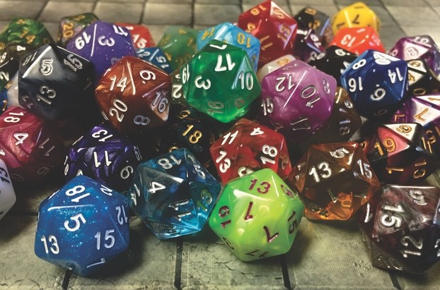

Who am I?
A quick introduction to me, including my education and intrests
Past Education

My high school experience
I graduated Summit Shasta high school, a charter school in Daly City. This charter school focused on integrating technology into curriculum (ie: they gave every student a Chromebook). Whenever someone asks me about my high school, I'm always somewhat conflicted. On one hand, many of the teachers there were extremely dedicated to their student, creating a positive enviornment for all of us. There was also an admirable effort to create a strong community. However, the Summit organization, which administered my school, was problematic in a few ways. They had a somewhat toxic corperate culture that made it difficult for student voices to have a real impact on decisions and treated their teacher awefully, including attempting to obstruct and bust the union that was forming during my time at the school.
Academic Intrests
What I'm going to study
I'm not 100% sure on what exact field I will dedicate my time to in college, but I know that I am intrested in studying physics, computer science, or possibly engineering. I love understanding a system and being able to work with it through that understanding, which I feel makes me a good fit for these disciplines. I also have had positive experiences in these fields in the past, from enjoyable computer science classes to hours spent watching YouTube videos on the search for a Theory of Everything. I should also mention my intrest in political science; as opposed to these other aforementioned fields, my intrest in political science comes from my intrest in political activism -- I have phone banked and canvased for multiple campaigns in San Francisco, (sorry if you didn't like my fliers).
Personal Intrests
What do I like to do
The above image refers to the roleplaying game Dungeons and Dragons, one of the ways I pass the time with friends. Like many of my intrests, it falls into the camp of traditionally "nerdy" activities, but it provides a great way to practice communication, teamwork, and creative problem solving. I also enjoy activites such as reading, 4x strategy games, and occasionally building something random out of whatever materials happen to be on hand. I would also consider political activism a personal intrest (When I consider my intrests outside of "academics," I realize that there isn't much reasoning behind the destinction). In general, perhaps my most important perosnal intrest is that in engadging in and contributing to a strong community. It is this intrest that lead me to choose both my high school and college.